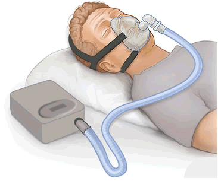
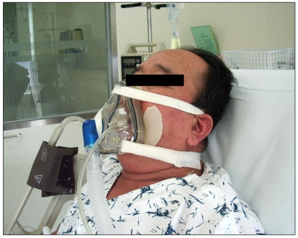
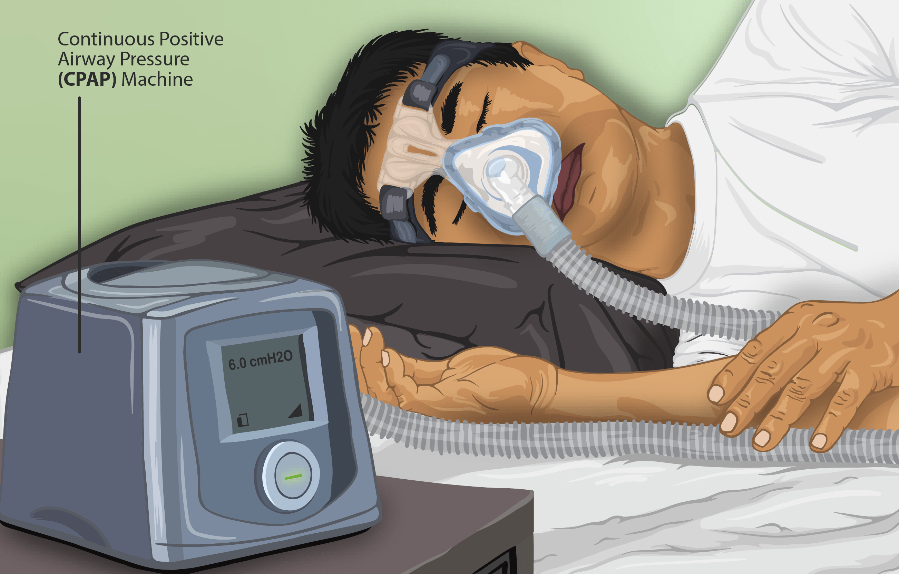

PSV, CPAP, SIMV. Aqui o paciente deixa de ser passivo e vira gerador de pressão: Pvia aérea + Pmúsculo movem o mesmo gás — um dueto. A pressão você ajusta; mas são o gatilho e a ciclagem que decidem se máquina e paciente respiram juntos. Para a Dani.



"Este é o paciente." Ele faz força a cada segundo — e a máquina responde a menos da metade.
Homem, 68 anos, DPOC exacerbado, em desmame em PSV (PS 12, PEEP 3, ciclagem 25%). Resistência alta, pulmão hiperinsuflado. À primeira vista, "tolerando" o modo espontâneo.
O tórax sobe ~30 vezes/min, mas o ventilador mostra ~18 respirações: muitos esforços não disparam. E quando disparam, a máquina continua insuflando depois que ele já quer expirar. Abra O dueto e o Laboratório.
"Está brigando com o ventilador e taquipneico — sedar mais, talvez subir PS ou backup." Faz sentido?
Sedar e/ou subir PS não toca a causa. Há dois problemas mecânicos: a auto-PEEP carrega o gatilho, exigindo vencer ~5 cmH₂O antes de gerar fluxo; e o τ alto faz o fluxo cair devagar, então a máquina cicla tarde, empurrando na expiração neural. Subir PS aumenta VC e aprisionamento; sedar mascara sem aliviar a carga.
Atacou-se a mecânica: PEEP externa para contrabalançar a auto-PEEP; % de ciclagem maior para ciclar antes; broncodilatação. A FR exibida passou a igualar os esforços e a tiragem cedeu. No espontâneo, briga se resolve acertando gatilho e ciclagem.
Seis perguntas para deduzir os modos espontâneos: o paciente é um gerador de pressão que soma com a máquina.
Uma respiração em PSV. A máquina aplica o PS e o paciente puxa com o músculo; as duas pressões somam para mover o gás. Mude o PS e veja a parcela do paciente encolher.
Verde = inspiração neural; laranja = inspiração da máquina. Quando não coincidem, há assincronia. Carregado com o paciente do caso DPOC · auto-PEEP
Honestidade do modelo: integrador RK4 da equação do movimento com pressão muscular: Paw + Pmus = R·fluxo + V/C + PEEP. Compartimento único; R e C constantes; esforço como meia-senoide. Auto-PEEP vem de volume aprisionado; carga de gatilho = max(0, auto-PEEP − PEEP aplicada). Números são estimativas didáticas.
Cinco questões sobre o dueto, o gatilho e a ciclagem.